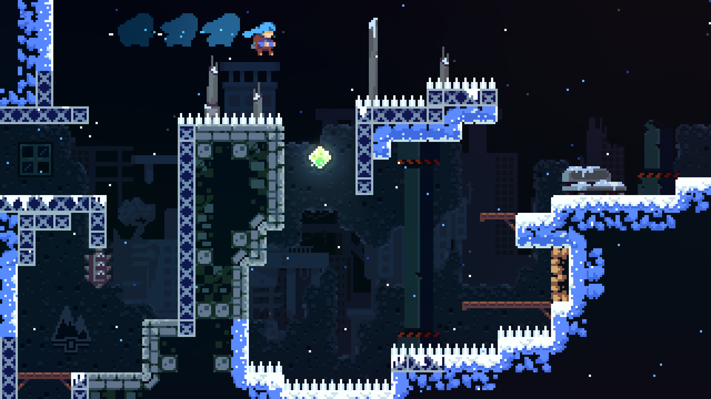
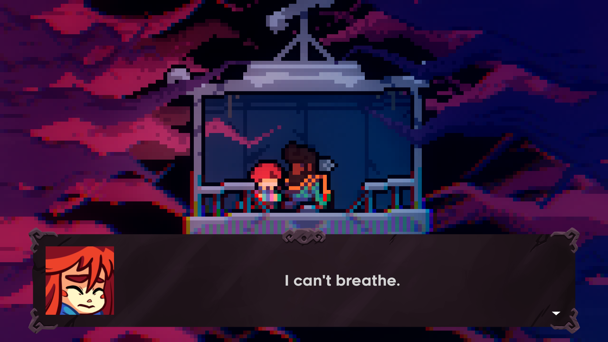
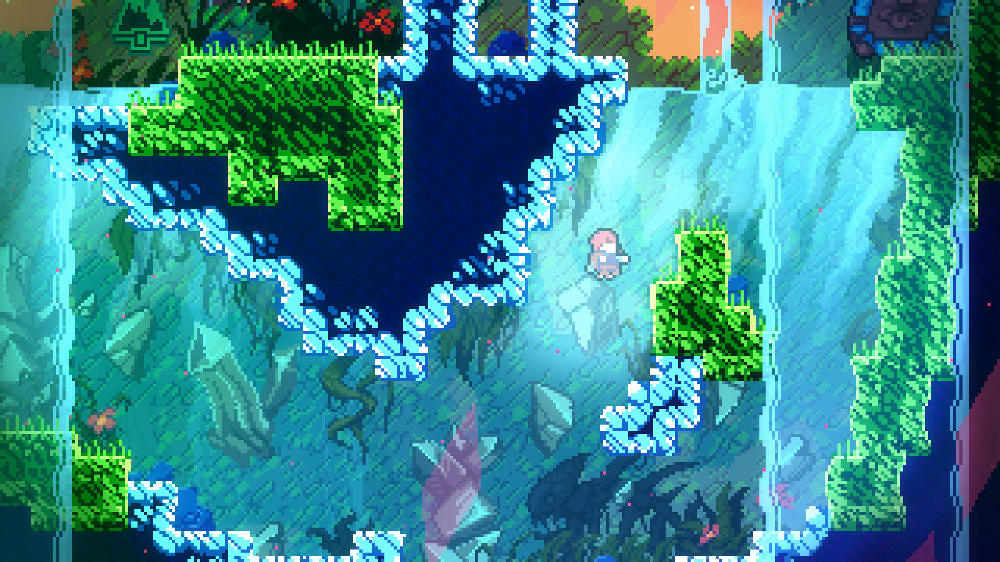
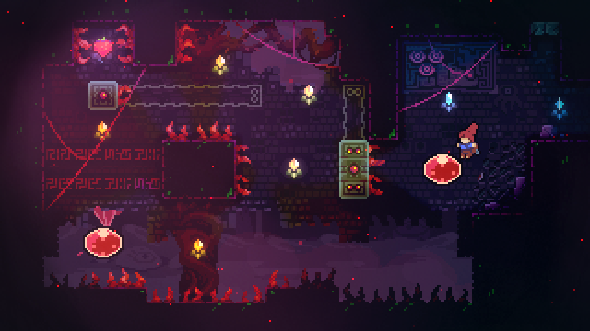

Ajude Madeline a enfrentar seus demônios internos em sua jornada até o topo da Montanha Celeste, nesse jogo de plataforma super afiado dos criadores de TowerFall.
Desbrave centenas de desafios meticulosos, descubra segredos complicados e desvende o mistério da montanha.
Uma aventura para um jogador focada em narrativa, com gostinho de infância, que conta com um elenco encantador e uma história emocionante de autodescoberta



Uma montanha gigantesca com mais de 700 telas de desafios de plataforma exigentes e segredos ardilosos, Capítulos de Lado B brutais para desbloquear, criados apenas para os alpinistas mais ousados
Finalista do prêmio "Excelência em Áudio" do IGF, com mais de 2 horas de música original lideradas por um piano impressionante e batidas memoráveis de sintetizadores
Os controles são simples e acessíveis - salte, faça dash aéreo e escale -, mas com camadas de profundidade para dominar, onde cada morte é uma lição.
Renascimentos incrivelmente rápidos permitem que você continue escalando enquanto descobre os mistérios da montanha e desbrava seus perigos.



Requisitos Mínimos
| Requisito | Windows | macOS | steamOS / Linux |
|---|---|---|---|
| Sistema Operacional | Windows 7 ou posterior | Lion 10.7.5, 32/64-bit | glibc 2.17+, 32/64-bit |
| Processador | Intel Core i3 M380 | Intel Core i3 M380 | Intel Core i3 M380 |
| Memória RAM | 2 GB | 2 GB | 2 GB |
| Placa de Vídeo | Intel HD 4000 | OpenGL 3.0+ (2.1 com extensões ARB são suportadas) | OpenGL 3.0+ (2.1 com extensões ARB são suportadas) |
| Espaço em Disco | 1200 MB de espaço disponível | 1200 MB de espaço disponível | 1200 MB de espaço disponível |